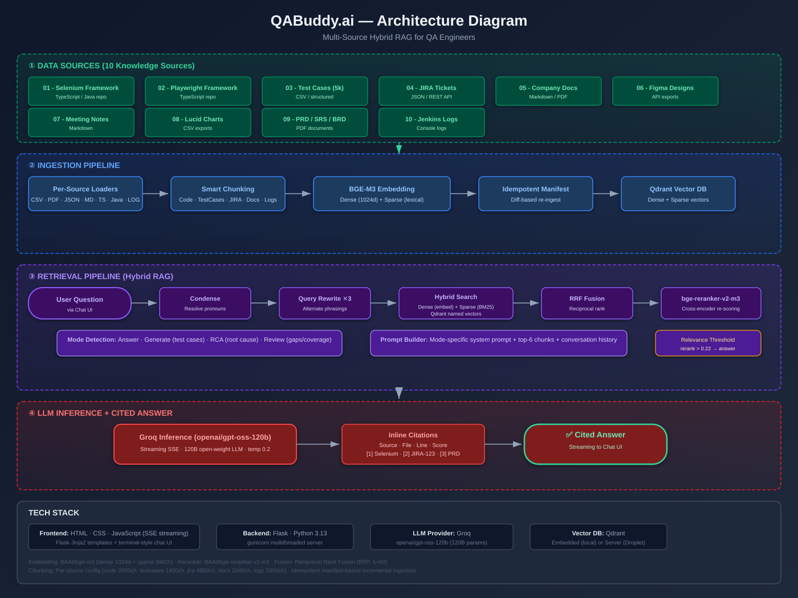

Multi-Source Hybrid RAG for QA Engineers — Architecture & Backend Documentation
QABuddy.ai is a multi-source Hybrid RAG (Retrieval-Augmented Generation) system purpose-built for QA engineers. It ingests 10 distinct knowledge sources — from test automation frameworks and JIRA tickets to PRDs and Jenkins logs — and answers questions with cited, grounded answers.
The system uses a dense + sparse hybrid search pipeline powered by BAAI/bge-m3 embeddings stored in Qdrant, fused via Reciprocal Rank Fusion (RRF), re-ranked by a bge-reranker-v2-m3 cross-encoder, and finally answered by a Groq-hosted 120B open-weight LLM.
One question → one cited answer grounded in 10 QA knowledge sources. Eliminate context-switching between JIRA, test reports, PRDs, and logs.
Answer questions, generate test cases, perform root cause analysis (RCA) on failures, and review test coverage gaps — all with inline citations.
Flask (Python 3.13) · BGE-M3 embeddings · Qdrant vector DB · bge-reranker-v2-m3 · Groq LLM (openai/gpt-oss-120b) · Gunicorn
The diagram below illustrates the complete data flow — from 10 knowledge sources through ingestion, retrieval, and LLM inference to the final cited answer.

Four-layer architecture: Data Sources → Ingestion Pipeline → Retrieval Pipeline → LLM Inference + Cited Answer
chapter_08_QABuddyAI/
├── app/
│ ├── __init__.py
│ ├── config.py # Central config: .env + config.yaml
│ ├── llm.py # OpenAI-compatible LLM client (Groq)
│ ├── prompts.py # Mode-specific system prompts
│ ├── retrieval.py # Ask pipeline: condense → rewrite → hybrid → rerank → cite
│ ├── core/
│ │ ├── chunking.py # Per-source smart chunking strategies
│ │ ├── embedder.py # BGE-M3 dense + sparse embedding
│ │ ├── fusion.py # Reciprocal Rank Fusion (RRF)
│ │ ├── reranker.py # bge-reranker-v2-m3 cross-encoder
│ │ └── store.py # Qdrant vector store wrapper
│ ├── ingestion/
│ │ ├── base.py # Abstract loader base class
│ │ ├── cli.py # CLI entry point for ingestion
│ │ ├── loaders.py # Per-source loaders (CSV, PDF, JSON, MD, TS, Java, LOG)
│ │ └── pipeline.py # Orchestration: load → chunk → embed → store
│ └── server/
│ ├── app.py # Flask API (SSE chat + ingest + search + stats + health)
│ ├── static/
│ │ ├── app.js # Chat UI JavaScript (SSE streaming)
│ │ └── style.css # Chat UI styles
│ └── templates/
│ └── index.html # Jinja2 chat UI template
├── data/ # 10 knowledge source directories (01..10)
├── config.yaml # Tunable parameters (chunking sizes, retrieval settings)
├── requirements.txt # Python dependencies
└── Dockerfile # Containerized deployment
The application uses a two-layer configuration approach. Secrets (API keys) are stored in
.env and loaded via python-dotenv. Tunable parameters like chunking
sizes and retrieval settings are in config.yaml. The config.py module
merges both and provides a cfg(path, default) helper for nested YAML access.
# config.yaml (excerpt)
chunking:
code:
max_chars: 2000 # one method/class unit
min_chars: 250 # tiny units merge into neighbors
testcases:
size: 1400 # 1 row = 1 chunk
jira:
size: 4800 # 1 ticket = 1 chunk
docs:
size: 2048 # ~512 tokens
overlap: 300
retrieval:
top_n_hybrid: 20 # candidates per dense / sparse search
rerank_candidates: 12 # fused list fed to cross-encoder
top_k: 6 # final chunks sent to the LLM
relevance_threshold: 0.22 # max rerank score below this → "not in KB"The ingestion pipeline processes each of the 10 data sources through four stages:
.ingest_manifest.json) tracks file hashes so only changed files are re-embedded on subsequent runs.
When a user asks a question, the retrieval pipeline executes a sophisticated multi-step process:
openai/gpt-oss-120b (a 120B open-weight model). The response is streamed back via Server-Sent Events (SSE) with inline citations referencing source files and line numbers.
| Endpoint | Method | Description |
|---|---|---|
/ |
GET | Chat UI (Jinja2 template with source filter panel) |
/api/health |
GET | Health check: LLM key status, models, Qdrant mode, collection info |
/api/stats |
GET | Knowledge base statistics: chunk counts per source type |
/api/chat |
POST | Ask a question (SSE streaming). Body: {question, sources?, mode?, history?} |
/api/search |
POST | Debug: retrieval only, no LLM. Returns rewrites, timings, and candidate chunks |
/api/ingest |
GET | Trigger ingestion (SSE streaming). Params: source?, limit?, force? |
The LLM client (app/llm.py) is provider-agnostic via the OpenAI-compatible API format.
By default it uses Groq for ultra-fast inference on openai/gpt-oss-120b,
but can be swapped to any OpenAI-compatible provider (OpenRouter, OpenAI, local Ollama) by changing
two environment variables:
LLM_BASE_URL=https://api.groq.com/openai/v1
LLM_MODEL=openai/gpt-oss-120b
The client supports both streaming (chat_stream for SSE) and non-streaming
(chat for one-shot) modes. API key resolution checks LLM_API_KEY,
GROQ_API_KEY, and OPENROUTER_API_KEY in order.
Backend server with SSE streaming for real-time chat and ingestion progress. Gunicorn for production multi-threaded deployment.
Multi-lingual, multi-function embedding model producing both dense (1024d) and sparse (lexical BM25) vectors in one forward pass. Enables hybrid search without dual encoders.
Vector database with native support for named vectors (dense + sparse per point). Supports hybrid search with payload filtering by source type. Runs embedded locally or as a server in Docker.
Cross-encoder reranker that computes precise relevance scores between query and candidate chunks. Significantly improves precision over embedding-based similarity alone.
Combines dense and sparse search rankings using the formula: RRF(d) = 1/(k + rank(d)). Robust to score distribution differences between the two retrieval methods.
Ultra-fast LLM inference via Groq's Language Processing Units. Hosts openai/gpt-oss-120b (120B parameters) with streaming token generation at <100ms latency.
| Source Type | Strategy | Chunk Size | Overlap |
|---|---|---|---|
| Code (Selenium/Playwright) | Method/class boundary detection | 2000 chars | — |
| Test Cases (CSV) | One row = one chunk | 1400 chars | 0 |
| JIRA Tickets | One ticket = one chunk | 4800 chars | 0 |
| PDFs / Docs / PRDs | Size-based with overlap | 2048 chars | 300 chars |
| Meeting Transcripts | Size-based with overlap | 3600 chars | 480 chars |
| Jenkins Logs | Failure block extraction | 2400 chars | 12 context lines |
| Parameter | Value | Purpose |
|---|---|---|
| top_n_hybrid | 20 | Candidates per dense/sparse search |
| rerank_candidates | 12 | Fused candidates fed to cross-encoder |
| top_k | 6 | Final chunks sent to LLM |
| RRF k | 60 | Reciprocal Rank Fusion constant |
| rewrite_n | 3 | Number of query rewrites |
| relevance_threshold | 0.22 | Minimum reranker score for answer |
| LLM temperature | 0.2 | Low temperature for factual answers |
| LLM max_tokens | 1400 | Maximum response length |
| # | Source | Format | Content |
|---|---|---|---|
| 01 | Selenium Framework | TypeScript / Java | Test automation framework code |
| 02 | Playwright Framework | TypeScript | Test automation framework code |
| 03 | Test Cases | CSV | ~5,000 structured test cases |
| 04 | JIRA Tickets | JSON | Bug reports, stories, tasks |
| 05 | Company Docs | Markdown / PDF | QA processes, guidelines |
| 06 | Figma Designs | API exports | UI design specifications |
| 07 | Meeting Notes | Markdown | Sprint planning, standups |
| 08 | Lucid Charts | CSV exports | Flow diagrams, architecture |
| 09 | PRD / SRS / BRD | Product requirements | |
| 10 | Jenkins Logs | Console logs | Build failures, stack traces |
The application is designed for deployment on a DigitalOcean Droplet using Docker Compose with three services: Qdrant (vector DB), the Flask app (gunicorn), and Caddy (TLS termination + basic auth). The Dockerfile installs Python 3.13, the BGE-M3 model (cached for faster startup), and all dependencies.
# docker-compose.yml services:
# qdrant — vector database (port 6333)
# app — gunicorn Flask server (port 5080)
# caddy — reverse proxy with TLS + basic auth (port 443)For local development, Qdrant runs embedded within the Flask process (no separate server needed). The ingestion pipeline uses an idempotent manifest to track file changes, enabling incremental re-ingestion without reprocessing unchanged files.
The application is deployed and accessible at:
🌐 https://qabuddy-ai.vercel.app
Note: The Vercel deployment hosts the documentation and architecture diagram. The full interactive RAG application requires a Python/ML backend with GPU-accelerated embedding models and a Qdrant vector database, which is deployed on a DigitalOcean Droplet via Docker Compose.
This page and the architecture diagram are hosted on Vercel for easy access and sharing.
The complete RAG system with chat UI, ingestion pipeline, and 10 knowledge sources runs on a VPS with Docker Compose.
All code is open source in the AITesterBlueprint3x repository under chapter_08_QABuddyAI/.